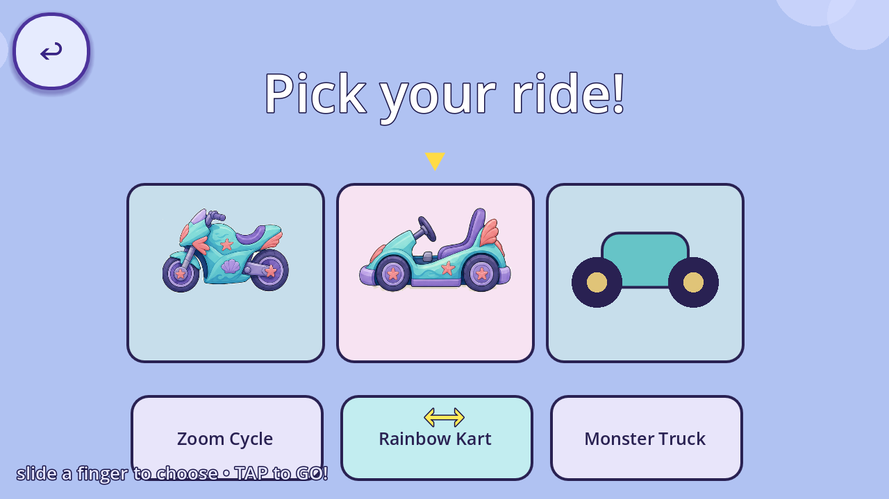
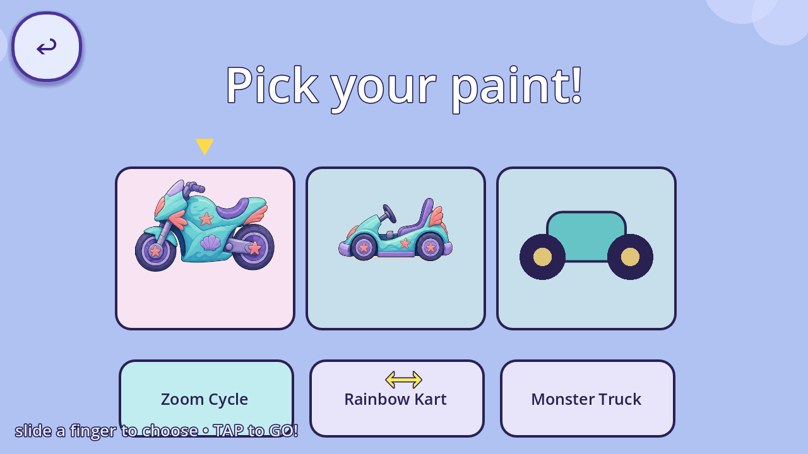
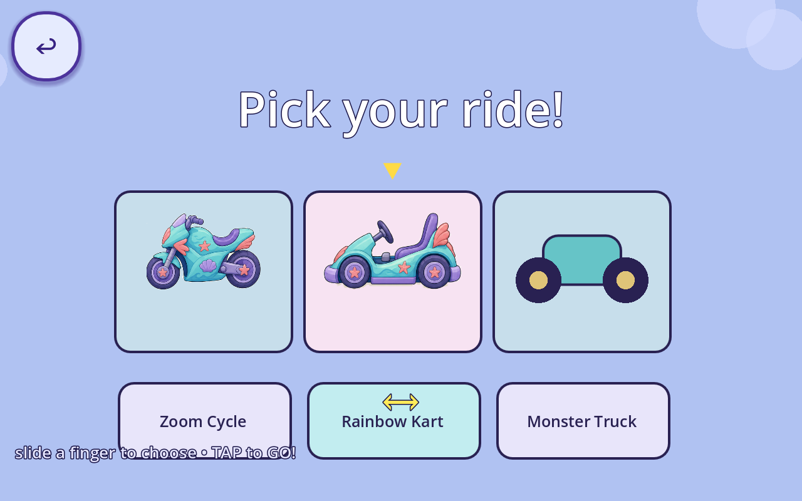
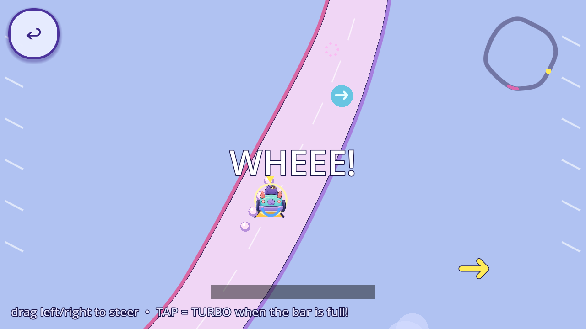
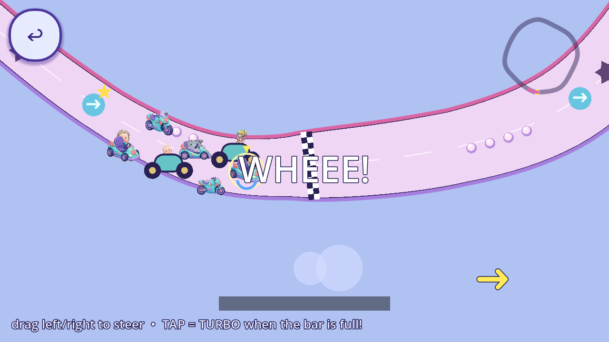
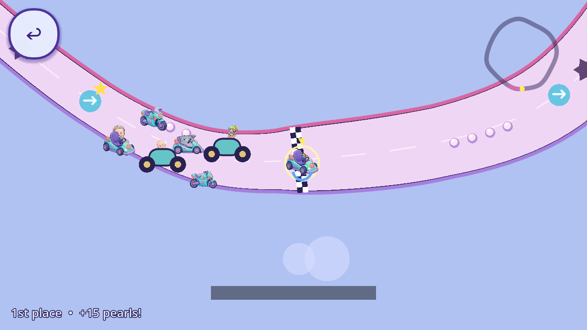
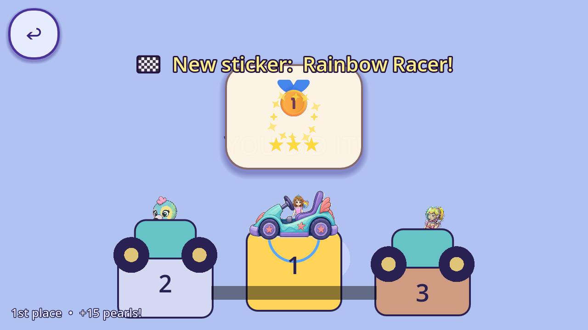

Original KartGame and unchanged KartDriving mechanics: all 17 features retained. Three rides, eight paints, full pack, turbo/drift/drafting, items, ramps, hazards, shortcut, reverse, contacts, saves and completion remain together.
Implementation candidate. Truck directional art, environment/cockpit polish, target-device performance/touch, child and owner acceptance remain pending. This does not claim separate Opera adapter integration, release or game-wide audit closure.
Review payload manifest · Machine/capture receipt · Exact scalar parity · Scope and evidence · Preserved initial source review






